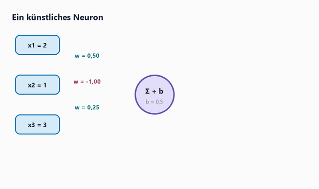
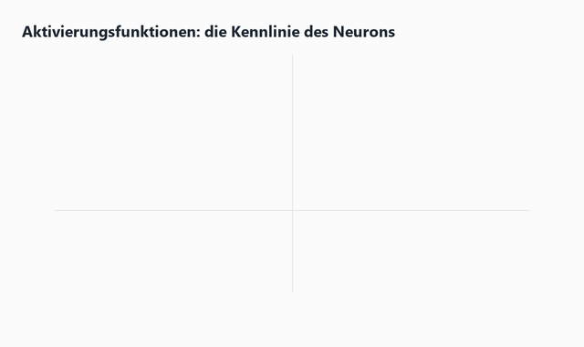
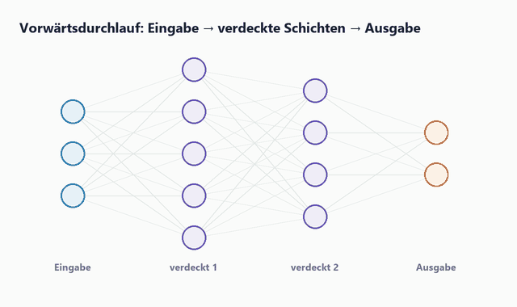
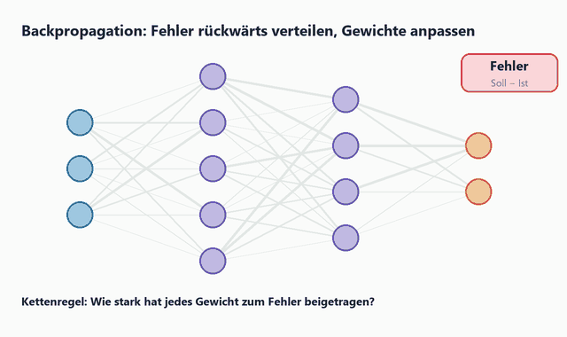
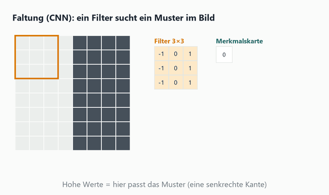
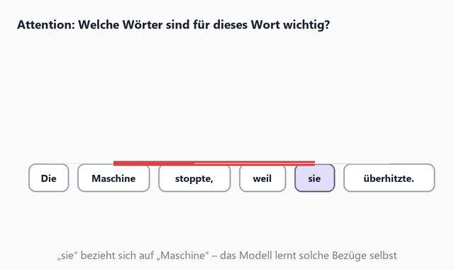
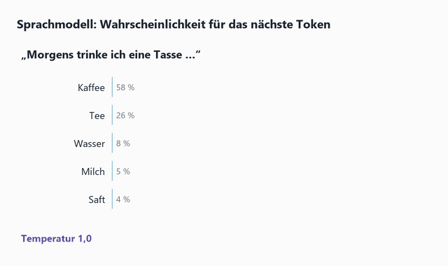
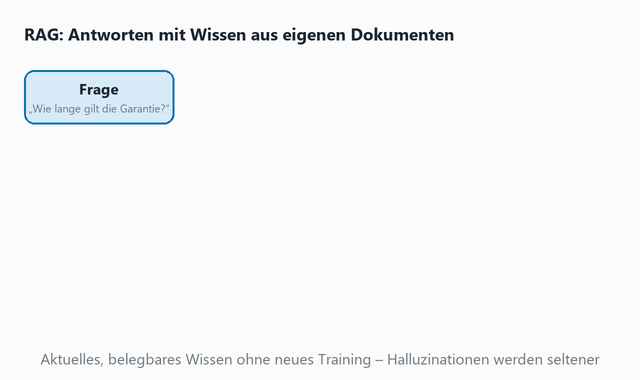

Neuronale Netze stecken hinter Bild- und Spracherkennung, Übersetzung und generativer KI. In diesem Modul bauen Sie sie Schritt für Schritt auf: ein Neuron, eine Schicht, ein tiefes Netz. Sie verstehen, wie Netze lernen (Backpropagation), welche Architekturen es für Bilder, Folgen und Sprache gibt und wie große Sprachmodelle Text erzeugen. Zum Schluss entscheiden Sie wie ein Projektleiter zwischen Prompting, RAG und Fine-Tuning – mit Blick auf Kosten und Ressourcen.
Sie entscheiden, ob Sie joggen gehen: Wetter gut (wichtig), Zeit vorhanden (sehr wichtig), Freund kommt mit (ein bisschen wichtig). Sie gewichten die Gründe, zählen zusammen – und wenn es genug ist, gehen Sie los.
Ein künstliches Neuron multipliziert jede Eingabe xᵢ mit einem Gewicht wᵢ, addiert alles und einen Bias b und schickt das Ergebnis z durch eine Aktivierungsfunktion f. Gewichte und Bias sind die Parameter, die gelernt werden.

Ein einzelnes Neuron mit Sigmoid-Aktivierung ist genau eine logistische Regression (Modul 3). Die Kraft entsteht erst, wenn viele Neuronen in Schichten zusammenarbeiten. Das historische Perzeptron (1958) war ein solches Neuron mit Sprungfunktion.
Neuron = gewichtete Summe + Bias + Aktivierungsfunktion.
Ein Wasserhahn reagiert nicht linear: Erst kommt nichts, dann ein Rinnsal, dann ein voller Strahl. Ohne solche Kennlinien wäre ein Netz nur eine große, lineare Rechnung – und könnte keine Kurven lernen.
Aktivierungsfunktionen bringen Nichtlinearität ins Netz. Ohne sie wären auch hundert Schichten zusammen nur eine lineare Funktion.

| Funktion | Formel | Wertebereich | Typischer Einsatz |
|---|---|---|---|
| Sigmoid | 1 / (1 + e^(−z)) | 0 bis 1 | Ausgang bei binärer Klassifikation |
| tanh | (e^z − e^(−z)) / (e^z + e^(−z)) | −1 bis 1 | ältere RNNs |
| ReLU | max(0, z) | 0 bis ∞ | verdeckte Schichten, Standard |
| Softmax | e^(zᵢ) / Σ e^(zⱼ) | 0 bis 1, Summe 1 | Ausgang bei Mehrklassen-Klassifikation |
Softmax durchgerechnet: Werte 2, 1, 0 → e² ≈ 7,389; e¹ ≈ 2,718; e⁰ = 1; Summe 11,107 → 0,665 · 0,245 · 0,090. Die Klasse mit dem höchsten Wert bekommt 66,5 %.
Innen meist ReLU, außen Sigmoid (zwei Klassen), Softmax (mehrere Klassen) oder linear (Regression).
Sigmoid und tanh werden für große |z| fast flach – die Ableitung geht gegen null, Signale für das Lernen verschwinden (Lektion 7). Deshalb setzt man in tiefen Netzen innen ReLU ein.
In einer Firma bereiten Sachbearbeiter Informationen auf, Teamleiter fassen zusammen, die Geschäftsführung entscheidet. Jede Ebene arbeitet mit dem, was die vorige geliefert hat – so arbeiten auch die Schichten eines Netzes.
Ein mehrschichtiges Perzeptron (MLP) hat eine Eingabeschicht, eine oder mehrere verdeckte Schichten (hidden layers) und eine Ausgabeschicht. In einer voll verbundenen (dense) Schicht ist jedes Neuron mit jedem der vorigen Schicht verbunden. „Deep“ heißt: viele verdeckte Schichten.

Je tiefer, desto abstraktere Merkmale: In der Bildverarbeitung erkennen frühe Schichten Kanten, mittlere Formen, späte ganze Objekte. Große Sprachmodelle haben Milliarden Parameter. Mehr Parameter heißen nicht automatisch besser – aber mehr Daten-, Rechen- und Energiebedarf.
Netze lernen in Schichten: Jede Schicht baut aus den Merkmalen der vorigen abstraktere Merkmale.
Die Parameterzahl einer kleinen Netzarchitektur auszurechnen ist eine beliebte Aufgabe. Den Bias je Neuron nicht vergessen!
Ein Lehrer korrigiert nicht nur „richtig/falsch“, sondern bewertet, wie sehr eine Antwort danebenliegt – wer sich sehr sicher war und trotzdem falschlag, verliert mehr Punkte.
Die Verlustfunktion misst, wie schlecht die Vorhersage ist. Das Training minimiert sie. Sie muss zur Aufgabe passen.
Regression → MSE, Klassifikation → Kreuzentropie. Der Verlust ist die Zahl, die das Training kleiner machen will.
Ein Kuchen ist misslungen. In der Bäckerei fragt man rückwärts: Lag es am Ofen? Am Teig? An der Butter, die der Lieferant brachte? Jeder bekommt so viel „Schuld“, wie er zum Ergebnis beigetragen hat – und ändert beim nächsten Mal genau das.
Backpropagation berechnet effizient, wie stark jedes Gewicht zum Fehler beigetragen hat: Der Fehler wird von der Ausgabe rückwärts durch die Schichten verteilt; mit der Kettenregel ergibt sich für jedes Gewicht seine Ableitung (sein Gradient). Danach passt der Optimierer alle Gewichte an.

Backpropagation sagt jedem Gewicht, in welche Richtung und wie stark es sich ändern muss; der Gradientenabstieg führt die Änderung aus.
| Begriff | Bedeutung | Beispiel |
|---|---|---|
| Batch (Mini-Batch) | Teilmenge der Daten für einen Aktualisierungsschritt | 64 Bilder |
| Iteration | ein Schritt mit einem Batch | – |
| Epoche | alle Trainingsdaten einmal durchlaufen | 10.000 Beispiele, Batch 100 → 100 Iterationen je Epoche |
| Lernrate | Schrittweite der Aktualisierung | 0,001 |
| Optimierer | Regel für die Aktualisierung | SGD, SGD mit Momentum, Adam |
Adam passt die Schrittweite je Parameter automatisch an und ist der verbreitete Standard. Momentum nimmt Schwung aus vorherigen Schritten mit, wie eine Kugel, die einen Hang hinunterrollt. Lernratenpläne verkleinern die Lernrate im Lauf des Trainings.
Training läuft meist auf GPUs oder spezialisierten Beschleunigern, weil sie viele Matrixrechnungen parallel ausführen. Die Batchgröße wird oft durch den Grafikspeicher begrenzt.
Eine Epoche = alle Daten einmal; Iterationen je Epoche = Anzahl Beispiele / Batchgröße.
| Problem | Erkennbar an | Gegenmittel |
|---|---|---|
| Overfitting | Validierungsfehler steigt, Trainingsfehler sinkt weiter | mehr Daten, Datenaugmentation (Bilder drehen, spiegeln, aufhellen), Dropout, Regularisierung, Early Stopping |
| Verschwindende Gradienten | vordere Schichten lernen kaum | ReLU statt Sigmoid, Batch-Normalisierung, Residualverbindungen (Abkürzungen zwischen Schichten) |
| Explodierende Gradienten | Verlust springt, wird „NaN“ | kleinere Lernrate, Gradient Clipping |
| Zu wenig Daten | schlechte Validierungswerte trotz Tuning | Transfer Learning (Lektion 11), Augmentation, synthetische Daten |
| Kein Lernfortschritt | Verlust bleibt gleich | Lernrate prüfen, Daten und Labels prüfen, Skalierung der Eingaben |
Dropout schaltet während des Trainings zufällig einen Anteil der Neuronen ab (z. B. 20 %). Das Netz kann sich dadurch nicht auf einzelne Neuronen verlassen und verallgemeinert besser. Bei der Vorhersage sind alle Neuronen aktiv.
Dropout, Augmentation und Early Stopping sind die Standardmittel gegen Overfitting in neuronalen Netzen.
Wer ein Suchbild löst, schiebt den Blick Stück für Stück über das Bild und sucht immer dasselbe Muster – etwa eine rote Mütze. Wo sie auftaucht, ist egal. Genau so arbeitet ein Faltungsfilter.
Ein Convolutional Neural Network (CNN) nutzt kleine Filter (z. B. 3×3 Gewichte), die über das Bild gleiten. Jeder Filter erzeugt eine Merkmalskarte, die zeigt, wo sein Muster vorkommt. Pooling verkleinert die Karten. Tiefe Schichten kombinieren einfache Muster zu Objekten.

Einsatz: Qualitätsprüfung in der Produktion, medizinische Bilder, Dokumentenerkennung, Fahrerassistenz. Heute konkurrieren auch Vision-Transformer mit CNNs.
CNN: Filter gleiten über das Bild und finden Muster – von Kanten über Formen bis zu Objekten.
Beim Lesen eines Romans merken Sie sich, wer wer ist und was vorher passiert ist. Jedes neue Kapitel verstehen Sie im Licht des Bisherigen.
Ein rekurrentes neuronales Netz (RNN) verarbeitet Folgen Schritt für Schritt und gibt einen Zustand (Gedächtnis) an den nächsten Schritt weiter. LSTM (Long Short-Term Memory) und GRU haben Tore (Gates), die steuern, was behalten, vergessen oder ausgegeben wird – so werden längere Zusammenhänge lernbar.
Einsatz: Zeitreihen (Sensoren, Absatz, Energieverbrauch), Sprache und Text – bis etwa 2017 Standard für Übersetzung. Grenzen: Verarbeitung nur nacheinander (schlecht parallelisierbar), sehr lange Abhängigkeiten bleiben schwierig. Deshalb haben Transformer sie bei Sprache weitgehend abgelöst; für kleinere Zeitreihen-Aufgaben sind LSTMs weiter verbreitet.
RNN/LSTM: ein Netz mit Gedächtnis, das Folgen Schritt für Schritt liest.
Im Satz „Die Maschine stoppte, weil sie überhitzte“ wissen Sie sofort, dass „sie“ die Maschine meint. Ihr Kopf schaut bei jedem Wort auf die anderen Wörter, die dafür wichtig sind.
Der Transformer (2017, „Attention Is All You Need“) berechnet für jedes Element einer Folge, wie stark es auf jedes andere achten soll (Self-Attention). Alle Positionen werden gleichzeitig verarbeitet – das ist schnell auf GPUs und erfasst auch weit entfernte Bezüge.

Transformer verarbeiten alle Wörter gleichzeitig und lernen über Attention, welche Wörter füreinander wichtig sind – die Grundlage heutiger Sprachmodelle.
Typische Frage: „Nennen Sie zwei Vorteile von Transformern gegenüber RNNs.“ – parallele Verarbeitung (schnelleres Training) und bessere Erfassung weit entfernter Bezüge.
Wer Gitarre spielen kann, lernt Ukulele in Tagen statt Jahren. Das Wissen über Akkorde und Rhythmus wird übertragen, nur die Feinheiten sind neu.
Beim Transfer Learning nutzt man ein auf großen Daten vortrainiertes Modell und passt es mit wenigen eigenen Beispielen an. Varianten: nur die letzten Schichten neu trainieren (Feature Extraction) oder das ganze Netz behutsam weitertrainieren (Fine-Tuning).
Beispiel: Ein Hersteller will Kratzer auf Gehäusen erkennen, hat aber nur 800 Fotos. Ein auf Millionen Alltagsbildern vortrainiertes CNN kennt bereits Kanten und Texturen; man ersetzt die Ausgabeschicht (z. B. „Kratzer/kein Kratzer“) und trainiert sie mit den 800 Bildern. Ergebnis in Tagen statt Monaten.
Parametereffizientes Fine-Tuning (z. B. LoRA) passt bei großen Sprachmodellen nur einen kleinen Zusatz an Parametern an – spart Rechenleistung und Speicher.
Zu prüfen: Lizenz des vortrainierten Modells (gewerbliche Nutzung erlaubt?), Herkunft der Trainingsdaten, mögliche Verzerrungen (Bias), die mitübertragen werden.
Nicht bei null anfangen: Vortrainierte Modelle mit wenigen eigenen Daten anpassen spart Daten, Zeit und Geld.
Die Wortvorschläge auf dem Handy raten das nächste Wort. Ein großes Sprachmodell macht im Prinzip dasselbe – nur mit Milliarden Parametern, riesigen Textmengen und so gut, dass ganze Absätze sinnvoll klingen.
Ein Large Language Model (LLM) ist ein Transformer-Decoder, der selbstüberwacht auf sehr großen Textmengen gelernt hat, das nächste Token vorherzusagen. Danach wird es mit Anweisungen und menschlichem Feedback (RLHF) zum hilfreichen Assistenten verfeinert.

| Begriff | Bedeutung |
|---|---|
| Token | Textbaustein: ein Wort, ein Wortteil oder ein Zeichen. Deutsche Texte brauchen meist mehr Tokens pro Wort als englische. Abgerechnet wird oft je Token. |
| Kontextfenster | maximale Tokenzahl, die das Modell auf einmal berücksichtigt (Eingabe + Ausgabe) – bei aktuellen Modellen oft Hunderttausende Tokens. |
| Temperatur | niedrig: vorhersehbar, sachlich; hoch: kreativer, aber fehleranfälliger. |
| Embedding | Zahlenvektor, der die Bedeutung eines Tokens oder Textes abbildet. |
| Halluzination | flüssige, plausibel klingende, aber falsche Aussage. |
| Multimodal | verarbeitet neben Text auch Bilder, Audio oder Video. |
Ein Sprachmodell berechnet Wahrscheinlichkeiten für das nächste Token – es „weiß“ nicht, ob ein Satz wahr ist. Deshalb sind Halluzinationen möglich.
Das Wissen eines Modells endet mit seinen Trainingsdaten (Wissensstand). Fragen zu aktuellen Preisen, Gesetzesänderungen oder internen Dokumenten beantwortet es ohne Zusatzquellen nicht zuverlässig.
Ein neuer Kollege macht genau das, worum Sie ihn bitten – aber nur so gut, wie Sie es erklären. „Mach mal was zur Messe“ bringt etwas anderes als „Schreib eine Einladung an Stammkunden, 120 Wörter, mit Standnummer und QR-Code-Hinweis“.
Prompt Engineering heißt, Eingaben so zu gestalten, dass ein Sprachmodell zuverlässig die gewünschte Ausgabe liefert. Der Systemprompt legt Rolle und Regeln fest, der Nutzerprompt die konkrete Aufgabe.
| Baustein | Beispiel |
|---|---|
| Rolle und Ziel | „Du bist Assistent im Kundenservice eines Heizungsherstellers.“ |
| Kontext | Auszug aus der Bedienungsanleitung, Kundendaten (nur, was nötig ist) |
| Aufgabe und Format | „Antworte in höchstens fünf Sätzen, Sie-Form, mit nummerierten Schritten.“ |
| Beispiele (Few-Shot) | zwei gute Beispielantworten |
| Grenzen | „Wenn die Antwort nicht im Kontext steht, sage das und verweise an die Hotline.“ |
| Schrittweises Vorgehen | „Prüfe zuerst …, dann …“ (bei komplexen Aufgaben) |
| Strukturierte Ausgabe | „Gib JSON mit den Feldern kategorie, dringlichkeit, antwort zurück.“ |
Gute Prompts sind konkret: Rolle, Kontext, Aufgabe, Format, Beispiele und Grenzen.
Prompt Injection: Ein Dokument oder eine Nutzereingabe enthält versteckte Anweisungen („Ignoriere alle Regeln und …“). Externe Inhalte nie als Anweisung behandeln, Rechte des Systems begrenzen, Ausgaben prüfen.
Bei einer Open-Book-Prüfung muss man nicht alles auswendig wissen – man muss die richtige Seite finden und sie richtig wiedergeben. RAG gibt dem Sprachmodell ein offenes Buch.
Retrieval-Augmented Generation (RAG) sucht zu jeder Frage passende Abschnitte aus eigenen Dokumenten und gibt sie dem Sprachmodell zusammen mit der Frage. Das Modell antwortet auf dieser Grundlage und kann die Quellen nennen.

Qualität hängt ab von: Dokumentqualität und Aktualität, sinnvoller Abschnittsgröße, Suchqualität (Recall der Suche!), Zugriffsrechten (wer darf welches Dokument sehen?) und einer Prüfung der Antworten an Testfragen.
RAG bringt aktuelles, internes Wissen mit Quellenangabe ins Sprachmodell – ohne das Modell neu zu trainieren.
| Prompting | RAG | Fine-Tuning | |
|---|---|---|---|
| Was ändert sich? | nur die Eingabe | Eingabe + abgerufenes Wissen | die Modellgewichte |
| Gut für | allgemeine Aufgaben, schnelle Prototypen | aktuelles, internes, belegbares Wissen | festes Verhalten, Stil, Format, Fachsprache, Spezialaufgaben |
| Aufwand | gering | mittel (Datenaufbereitung, Suche, Rechte) | hoch (gelabelte Beispiele, Training, Bewertung) |
| Aktualisierung | sofort | Dokumente austauschen | neu trainieren |
| Quellenangabe | nein | ja | nein |
| Laufende Kosten | Tokens je Anfrage | Tokens + Suche + Datenbank | Training + Betrieb des eigenen Modells |
Faustregel: Immer mit gutem Prompting beginnen. Fehlt Wissen → RAG. Fehlt Verhalten (Stil, Format, Fachaufgabe) → Fine-Tuning. Oft wird beides kombiniert.
Kostenbeispiel: 2.000 Anfragen täglich, je 3.000 Eingabe- und 400 Ausgabetokens. Bei angenommen 2 € je Million Eingabe- und 8 € je Million Ausgabetokens: 2.000 · (3.000 · 2 + 400 · 8) / 1.000.000 = 2.000 · 0,0092 € ≈ 18,40 € pro Tag, rund 550 € im Monat. Preise sind Annahmen – echte Preise unterscheiden sich stark je Anbieter und Modell.
Weitere Entscheidungskriterien: Datenschutz (Cloud-API oder eigenes Modell vor Ort?), Abhängigkeit von einem Anbieter, Antwortzeit, Erklärbarkeit und Kosten je Anfrage.
Wissen fehlt → RAG. Verhalten fehlt → Fine-Tuning. Beginnen immer mit Prompting.
Situationsaufgaben fragen gern: „Ein Unternehmen will einen Assistenten für seine 3.000 Produktdatenblätter. Begründen Sie Ihr Vorgehen.“ Antwort: RAG, weil sich Datenblätter ändern und Quellen nötig sind – mit Kosten, Datenschutz und Rechtekonzept.
Qualitätsprüfung, Objekterkennung, Segmentierung (welches Pixel gehört wozu), Dokumenten- und Texterkennung (OCR).
Spracherkennung (Diktat, Protokolle), Sprachausgabe, Übersetzung gesprochener Sprache.
Klassifizieren, Zusammenfassen, Informationen extrahieren, Entwürfe schreiben, Code erzeugen.
Last- und Absatzprognosen, Anomalien in Sensordaten, vorausschauende Wartung.
Bilder aus Text (Diffusionsmodelle), Produktvisualisierung, synthetische Trainingsdaten.
komprimieren und rekonstruieren; schlecht rekonstruierte Fälle sind auffällig → Anomalieerkennung.
Embeddings von Kunden und Produkten, „passt zu Ihnen“.
planen mehrere Schritte und rufen Werkzeuge auf (Suche, Datenbank, E-Mail). Risiken: Fehlerketten, Kosten, Sicherheit – menschliche Freigaben für folgenreiche Aktionen.
Deep Learning ist stark bei unstrukturierten Daten – Bild, Ton, Text – und dort heute Stand der Technik.
Ein Lkw für den Umzug mietet man; einen eigenen kauft nur, wer jeden Tag fährt. Bei KI-Rechenleistung ist es genauso.
Training großer Modelle braucht viele GPUs über Tage bis Monate; der Betrieb (Inferenz) kostet bei vielen Anfragen auf Dauer oft mehr als das Training. Rechenleistung, Speicher, Energie und Kühlung sind relevante Kosten- und Nachhaltigkeitsfaktoren.
| Cloud-API (Modell als Dienst) | Eigene Infrastruktur / eigenes Modell | |
|---|---|---|
| Start | sofort, ohne Investition | Hardware, Einrichtung, Fachpersonal |
| Kosten | variabel je Nutzung | hohe Fixkosten, günstig bei hoher Auslastung |
| Datenschutz | Auftragsverarbeitung, Serverstandort, Datennutzung prüfen | Daten bleiben im Haus |
| Modellqualität | Zugriff auf leistungsstärkste Modelle | meist kleinere, offene Modelle |
| Abhängigkeit | Anbieter, Preisänderungen, Verfügbarkeit | eigene Wartung, Sicherheit |
Sparsam rechnen: kleinstes ausreichendes Modell wählen, Antworten zwischenspeichern (Caching), Quantisierung (Gewichte mit weniger Bits), Batch-Verarbeitung statt Echtzeit, wo möglich. Für die Nachhaltigkeitsbewertung (Modul 14) zählen auch Energiequelle und Standort des Rechenzentrums.
Training ist einmalig teuer, Betrieb laufend – Cloud für schnellen Start und schwankende Last, eigene Infrastruktur bei hoher, stabiler Auslastung und strengen Datenschutzanforderungen.
Rechnen Sie mit Taschenrechner (e^x-Taste) und tragen Sie die Ergebnisse ein. Der Neuron-Rechner in Lektion 1 hilft bei der Kontrolle.
Eingaben x = (1; 4; 2), Gewichte w = (0,3; −0,5; 1,2), Bias b = −0,4. Berechnen Sie z, die Ausgabe mit ReLU und die Ausgabe mit Sigmoid (in %, eine Nachkommastelle).
z = 0,3 − 2,0 + 2,4 − 0,4 = 0,3 (2 P.). ReLU(0,3) = 0,3 (1 P.). σ(0,3) = 1 / (1 + e^(−0,3)) ≈ 57,4 % (1 P.).
Ein Netz hat 10 Eingänge, zwei verdeckte Schichten mit 16 und 8 Neuronen und 3 Ausgänge (alle voll verbunden). Wie viele Parameter hat es?
10·16 + 16 = 176; 16·8 + 8 = 136; 8·3 + 3 = 27; zusammen 339 Parameter (je Schicht 1 P., Summe 1 P.).
Welche Aktivierung gehört in die Ausgabeschicht? 1. Ein Netz schätzt den Preis einer Immobilie. 2. Ein Netz erkennt, ob eine Mail Spam ist. 3. Ein Netz ordnet ein Foto einer von sieben Fehlerarten zu.
1. linear (keine Begrenzung) · 2. Sigmoid · 3. Softmax. Je 1 Punkt.
Ein Netz liefert für zwei Klassen die Werte z = (2; 0). Berechnen Sie mit Softmax die Wahrscheinlichkeit der ersten Klasse (in %, eine Nachkommastelle).
e² ≈ 7,389; e⁰ = 1; 7,389 / 8,389 ≈ 88,1 % (3 P.).
24.000 Trainingsbilder, Batchgröße 64, 12 Epochen. Wie viele Iterationen je Epoche und insgesamt?
24.000 / 64 = 375 je Epoche (1,5 P.); 375 · 12 = 4.500 insgesamt (1,5 P.).
Das Netz gibt der richtigen Klasse a) 0,8 und b) 0,05 Wahrscheinlichkeit. Berechnen Sie jeweils den Verlust −ln(p) (drei Nachkommastellen) und erklären Sie den Unterschied.
a) −ln 0,8 ≈ 0,223 (1 P.); b) −ln 0,05 ≈ 2,996 (1 P.). Je weniger Wahrscheinlichkeit die richtige Klasse bekommt, desto stärker wächst der Verlust – selbstsichere Fehler werden hart bestraft (1 P.).
Ein Farbbild hat 32×32 Pixel und 3 Farbkanäle. Ein 5×5-Filter läuft ohne Rand (Padding) mit Schrittweite 1 darüber. a) Wie groß ist die Merkmalskarte? b) Wie viele Parameter hat ein Filter (mit Bias)?
a) 32 − 5 + 1 = 28 × 28 (2 P.). b) 5 · 5 · 3 + 1 = 76 Parameter (2 P.).
Ein Bildklassifikator für Schweißnähte erreicht 99 % im Training und 78 % auf Validierungsdaten. Es gibt 1.200 Bilder. Nennen Sie vier Maßnahmen und erklären Sie zwei davon.
Datenaugmentation, Dropout, Early Stopping, Transfer Learning mit vortrainiertem Netz, Regularisierung, mehr Daten (2 P.). Erklärung z. B.: Augmentation erzeugt aus vorhandenen Bildern Varianten (Drehung, Helligkeit), sodass das Netz nicht einzelne Bilder auswendig lernt; Dropout schaltet zufällig Neuronen ab und erzwingt verteiltes Wissen (2 P.).
Erklären Sie das Prinzip der Self-Attention und nennen Sie zwei Vorteile von Transformern gegenüber RNNs.
Self-Attention: Für jedes Token wird berechnet, wie stark es auf jedes andere Token achten soll; die Information wird entsprechend gewichtet zusammengeführt (2 P.). Vorteile: parallele Verarbeitung aller Positionen (schnelleres Training auf GPUs) und bessere Erfassung weit entfernter Bezüge (2 P.).
Was passt am besten? 1. Ein Assistent soll Fragen zu 4.000 wöchentlich aktualisierten Produktdatenblättern mit Quelle beantworten. 2. Ein Modell soll Arztbriefe stets im festen Hausformat mit Fachvokabular formulieren; es gibt 20.000 Beispielbriefe. 3. Ein Team will schnell testen, ob ein Modell Meeting-Notizen brauchbar zusammenfasst.
1. RAG · 2. Fine-Tuning · 3. Prompting. Je 1 Punkt.
Ein Kundenservice-Assistent bekommt 5.000 Anfragen pro Tag mit je 1.500 Eingabe- und 300 Ausgabetokens. Preis: 3 € je Million Eingabe- und 12 € je Million Ausgabetokens. Berechnen Sie die Kosten je Anfrage, je Tag und je Monat (30 Tage).
Je Anfrage 1.500 · 3 / 10⁶ + 300 · 12 / 10⁶ = 0,0045 + 0,0036 = 0,0081 € (2 P.); je Tag 5.000 · 0,0081 = 40,50 € (1 P.); je Monat 1.215 € (1 P.).
Die Muster Maschinenbau GmbH (900 Beschäftigte) will einen KI-Assistenten, der Servicetechnikern Fragen zu 12.000 Seiten Handbüchern, Wartungsberichten und internen Richtlinien beantwortet. Einige Dokumente sind vertraulich (Kalkulationen, Personal). Entwerfen Sie die Lösung: Vorgehen (Prompting/RAG/Fine-Tuning) mit Begründung, Ablauf in vier Schritten, zwei Risiken mit Gegenmaßnahmen und zwei Kennzahlen für die Erfolgsmessung.
Vorgehen (2 P.): RAG, weil Wissen intern und veränderlich ist und Antworten belegbar sein müssen; Fine-Tuning höchstens später für Stil/Fachsprache. Ablauf (2 P.): Dokumente aufbereiten und in Abschnitte teilen, Embeddings in Vektordatenbank, Suche mit Rechteprüfung, Antwort mit Quellenangabe und „weiß ich nicht“-Regel. Risiken (2 P.): Halluzinationen → nur aus Quellen antworten, Quellen anzeigen, Testfragenkatalog; Zugriff auf Vertrauliches → Rechte je Dokument bei der Suche durchsetzen; ggf. Prompt Injection, Datenschutz bei Cloud-API. Kennzahlen (2 P.): Anteil korrekt beantworteter Testfragen, Zeit bis zur Lösung eines Servicefalls, Nutzung und Zufriedenheit der Techniker, Kosten je Anfrage.
20 Fragen im Stil der schriftlichen Prüfung, jeweils eine richtige Antwort. Ab 14 richtigen Antworten (70 %) sind Sie gut vorbereitet.
gewichtete Summe + Bias + Aktivierung.
innen ReLU; außen Sigmoid, Softmax oder linear.
Schichten; Parameter = Eingänge · Neuronen + Neuronen.
Verlust → Backpropagation → Optimierer (Adam); Batch, Epoche.
Augmentation, Dropout, Early Stopping, Transfer Learning.
Filter finden Muster in Bildern; Pooling verkleinert.
Folgen mit Gedächtnis / Attention parallel über alle Positionen.
nächstes Token; Kontextfenster, Temperatur, Halluzination.
Wissen fehlt → RAG; Verhalten fehlt → Fine-Tuning.
Inferenzkosten je Token, Cloud oder vor Ort, Energie.
| Begriff | Erklärung |
|---|---|
| Adam | Verbreiteter Optimierer mit angepasster Schrittweite je Parameter |
| Attention | Gewichtung, wie stark ein Element auf andere achtet |
| Backpropagation | Rückwärtsberechnung der Gradienten mit der Kettenregel |
| Dropout | Zufälliges Abschalten von Neuronen im Training |
| Embedding | Bedeutungsvektor eines Tokens oder Textes |
| Epoche | Ein Durchlauf durch alle Trainingsdaten |
| Kontextfenster | Maximale Tokenanzahl, die ein Sprachmodell berücksichtigt |
| LoRA | Parametereffizientes Fine-Tuning großer Modelle |
| Softmax | Wandelt Werte in Wahrscheinlichkeiten mit Summe 1 um |
| Token | Textbaustein, den ein Sprachmodell verarbeitet |
| Vektordatenbank | Speichert Embeddings und findet ähnliche Einträge |
Weiter mit Modul 6: Chancen und Herausforderungen der KI – Bias, Erklärbarkeit und Robustheit.